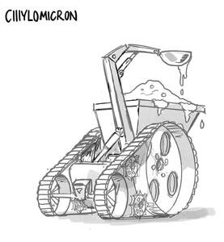

Trade Mark Journal No.2025/040 3 October 2025
UK00004259531 4 September 2025 (8,9,16,18,21,25,28,41)

The character name “CIIIYLOMICRON” refers solely to a fictional animated character as designed by the trademark owner. No claim of exclusive rights of ownership are asserted over the scientific compound chylomicron, the naturally occurring triglyceride-rich lipoprotein particle formed in the intestinal cells.
- Class 8
- Hand tools and implements, hand-operated; Cutlery; Side arms, except firearms; Razors.
- Class 9
- Downloadable electronic games; Games cartridges for use with electronic games apparatus; Electronic game programs; Electronic game software for handheld electronic devices; Electronic publications, downloadable, relating to games and gaming; Electronic game software; Downloadable electronic game programs; Downloadable electronic game software for wireless devices; Electronic game software for wireless devices; Electronic game software for mobile phones; Downloadable computer games; Computer game software for use with on-line interactive games; Interactive multimedia software for playing games; Computer games; Downloadable interactive entertainment software for playing video games; Downloadable electronic books; Games software for use with video game consoles; Interactive entertainment computer software for video games; Games software; Computer games entertainment software; Downloadable software in the nature of a mobile application for playing games; Games software for use with computers; Video games software; Computer games software; Electronic magazines; Educational software featuring instructions for playing games; Education software; Downloadable series of children’s books.
- Class 16
- Books in the fields of games and gaming; Magazines in the fields of games and gaming; Magazines featuring video and computer games; Books for children; Printed books; Covers for books; Coloring books; Educational books; Story books; Colouring books; Drawing books; Information books; Children’s books; Books; Children’s activity books; Magazines.
- Class 18
- Leather and imitations of leather; Animal skins and hides; Luggage and carrying bags; Umbrellas and parasols; Walking sticks; Whips, harness and saddlery; Collars, leashes and clothing for animals.
- Class 21
- Household or kitchen utensils and containers; Cookware and tableware, except forks, knives and spoons; Combs and sponges; Brushes, except paintbrushes; Brush-making materials; Articles for cleaning purposes; Unworked or semi-worked glass, except building glass; Glassware, porcelain and earthenware. .
- Class 25
- Costumes for use in role-playing games; Clothing for children; Clothing; Clothes; Children’s clothing; Childrens’ clothing.
- Class 28
- Electronic games; Handheld electronic games; Hand-held electronic games; Electronic Educational teaching games; Electronic educational game machines for children; Electronic games for the teaching of children; Games consoles; Checkers games; Quiz games; Toys; Toys, games, and playthings; Cuddly toys; Plush toys; Stuffed toys; Inflatable toys; Soft toys; Articles of clothing for toys; Children’s toys. .
- Class 41
- Electronic games services; On-line computer games; Providing interactive multi-player computer games via the internet and electronic communication networks; Provision of online computer games; Interactive computer game services; Educational services provided for children; Entertainment services for children; Education and instruction; Education services; Provision of entertainment services for children; Entertainment, education and instruction services; Primary education services; Training and education services; Entertainment services provided for children; Publication of educational books.
Gizzards Limited
Representative: Ligali Ayorinde